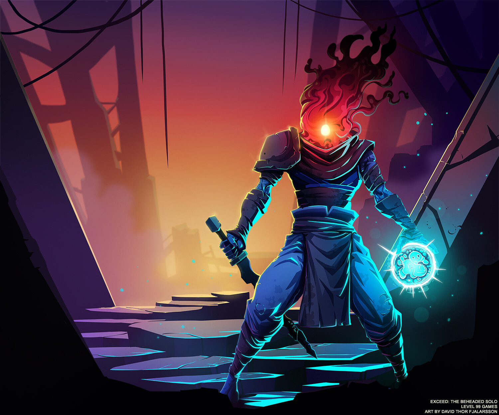

Art Made by: Thomas Vasseur On: Art Station
What is dead cells? Well.. according to the steam description, “Dead Cells is a rogue-lite, metroidvania inspired, action-platformer. You'll explore a sprawling,
ever-changing castle... assuming you’re able to fight your way past its keepers in 2D souls-lite combat. No checkpoints. Kill, die, learn, repeat. Regular free content updates!”
Dead Cells is also in the Metroidvania catgory for games, Metroidvania meaning a platforming game that features a single large, interconnected map, generally with discrete rooms or sections.
Dead Cells, a game with ever changing corridors with you the prisoner trapped to repeat the cycle of kill, die, learn, but hey you're immortal!
You the player wake up in the prisoners quarters on an unknown island where the king of the island resides in High Peak Castle, where its residents are plagued with a horrid disease that reanimates the dead into monsters. The Malaise…. It was called, no one could find a way to escape it.. The king of the island had those infected or even supected to be infected hung or sent to jail. and if you where a prisoner before well good luck with getting out... even if you served you sentence you where bound to be infected one way or another...
The prisoners quarters, a strangly placed tube starts raddling... out comes a blob? It craws over to a body..? Somethings happing.. BOOM! The body awakens a new the head being replace with flame, you are the beheaded now.. you pick up the gold sack and jump out of the area, go exploring and you run into monsters, one of them kills you, wait.. we are back where we started, I must be emortal! But when you go back everything has changed.. how is that possible?!
Made by: David Thor Fjalarsson On ArtStaion
The general lore of the game is that you are the beheaded the guy thats trying to get to the king at high peak caslte to defeat him. You have to go throught all of these challnges but if you die you back to the start, prinoners quarters. But this island use to be thriving with life happy people the king would entertain at his castle all was good until one day, people start getting sick the Malaise they call it no one knows how to surive it. No matter what you are doomed to catch it and once you do you die.. but don't worry you get to be reanimatied as a monster!
Here is a video the goes into detail of the lore and is layed out more clearly, made by Squatch Gaming Official